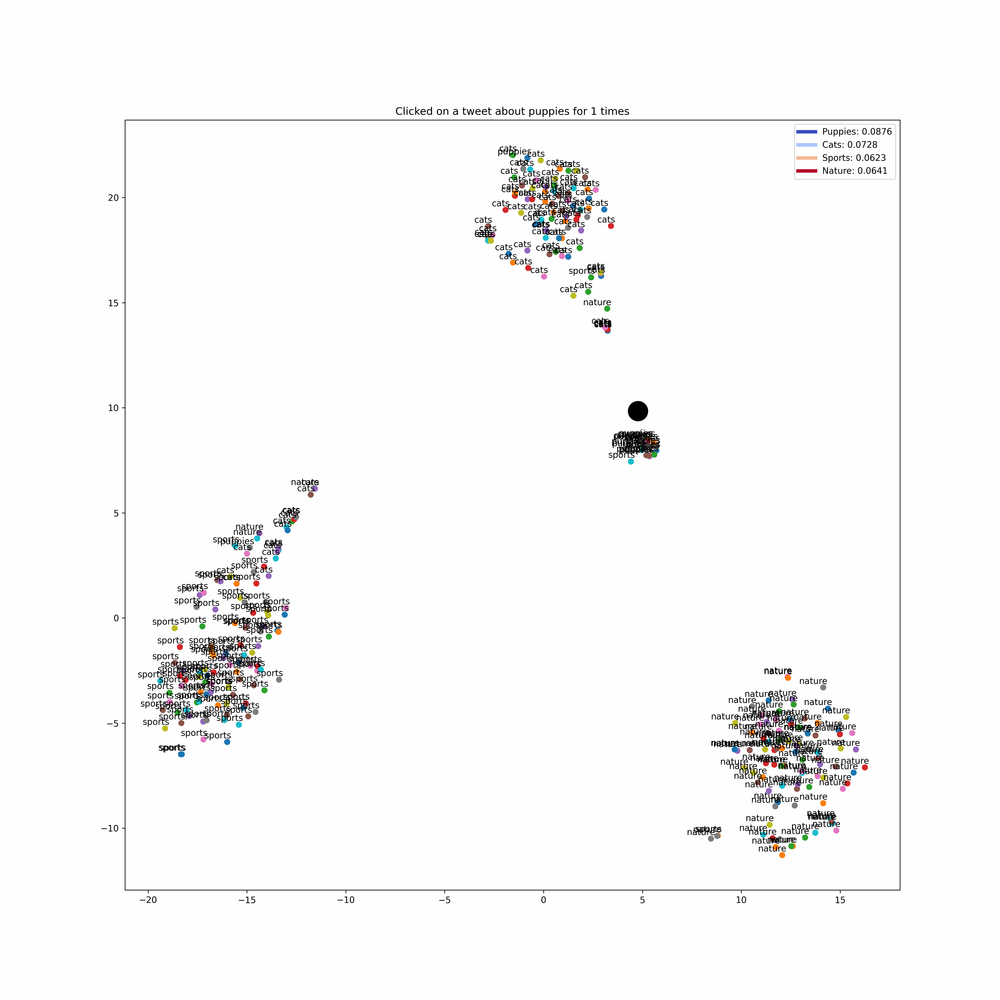

Introduction
In the modern world where social media has become the main source of information for many people, it is important to assure that it does not become a place of just communicating anger and hatred. A lot of things happen in the world, and research has shown that negative and inflammatory information tends to spread the fastest across the web. With our tool, we hope to bring a balance by showing happy news to people who surf the internet.
Our tool will retrieve “happy” news in real time from Twitter and New Api. The user will be provided with happy news based on their profile. They can also query for specific categories that they want to retrieve happy news from. The recommendation system will keep on improving and personalize its recommendations based on the implicit feedback received from the user through category selection and clicks.
It could be useful for individuals who are looking for positive news or uplifting content on the internet. Our tool will provide a quick and easy way for a user to feel good. Some potential users of this system could include: People who want to balance out negative news, Individuals who are struggling with mental health, News junkies who want to stay informed.
System Design
We have designed a system that uses sentiment analysis in combination with an online content-based recommendation system to provide good news to the users based on their personal preferences. The figure below shows the main components of the system.
- Flask API and Slack Bot
- Happy News Retriever
- Preprocessor and News Fetcher: When the user clicks on a category, say “puppies” a query with the search term “puppies” is sent to the Flask API. As we are trying to get happy news, querying the data sources with the raw query term will cause many articles which are not happy. Moreover, the APIs that we use to query the data sources only allow for a limited number of results to be retrieved at a time. This causes, the lowers the precision of the system. Therefore, we use query expansion to make the query more efficient in fetching the data. Theoretically, if we could get all the data related to the query we could filter out the happy news by ranking the documents using sentiment score. However, due to computational constraints of the sentiment classifier and limit set by the data retrieval APIs, the solution provided by query expansion has proven useful.
- Sentiment analysis model: For sentiment analysis, we used a BERT based model trained on twitter and news data.
- Ranker: The ranker takes in all the documents fetched from the data sources based on the query and ranks them based on their sentiment scores.
- Personalized Recommender
- User vector processor: For every new user, we initialize the user vector to the mean of the vector of 100 random good tweets. And based on the implicit feedback obtained from user clicks on category and articles we use the following update equation to make the user vector closer to the content or category embeddings. Here, Pu denotes the user vector and Qi denotes the embedding for the content/category that the user clicked on. Both the vectors are normalized to unit magnitudes.
- Content Vector: To represent the content of the news article, we use the data2vec model fine tuned for topic classification on our own dataset.
- Re ranker: We then rerank the happy news articles fetched by the happy news retriever system according to the cosine similarity score of the document embeddings and the user vector. This re-ranking scheme gives greater scores to those articles whose topics are more related to the topics that the user has clicked on before, therefore adding personalization to the news recommended.
Slack Bot is the entry point for our system. Users can interact with the application using the /happynews command. Currently we have four different categories for news retrieval: (a) Sports, (b) Cats, (c) Puppies, and (d) Nature. Besides, these there is an additional option “Recommended for You” which retrieves news based on the users’ history of interactions.
The Slack Bot communicates with our retrieval and recommendation system with the use of Flask API.
The happy news retriever retrieves good news from the data sources given the query and ranks them according to the goodness score. Currently, we have configured two data sources: Twitter and Google News. The happy news retriever has the following three sub-components:

Evaluation and Analysis
Evaluation is a crucial process in any project that involves assessing its effectiveness, user satisfaction, and impact. In our case, we used several methods to evaluate the performance of our project, which involved a Slack bot that offered personalized recommendations based on user preferences.
The evaluation method we used here was user testing. By releasing the Slack bot on the class project channel, we were able to get feedback from users on their click preferences. This feedback helped us to visualize how personalized recommendations were working and identify any areas that needed improvement. Another benefit of using user testing as an evaluation method was that it was a fast and easy way to gather feedback since we already had a project discussion channel set up where we already had a fair amount of activity from everyone. This allowed users to give their feedback in a familiar and convenient environment in a more practical way where they used our project as an end product.
During the user testing process, we discovered that some users were only clicking on the category and not clicking on the link to the article. This finding led us to integrate an update of user vectors not only based on the document vector but also on the basis of the category picked. This change helped to improve the accuracy of personalized recommendations.
Overall, evaluation is an essential process that allows us and will keep doing that in the future too to measure the success of our project, identify areas that need improvement, and make data-driven decisions to improve the effectiveness of our project. By using user testing and other evaluation methods, we were able to make the necessary changes to enhance the performance of our Slack bot and improve user satisfaction.
